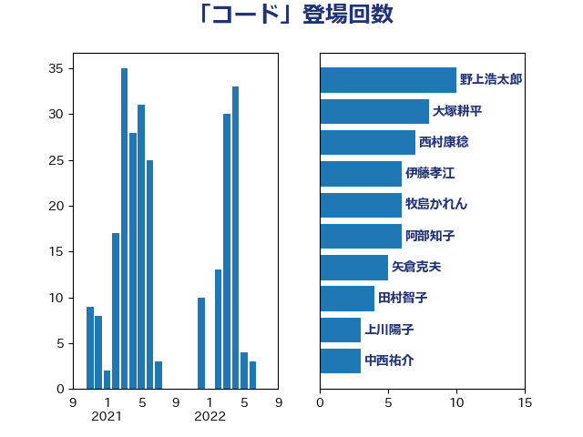

単語「コード」

| 野上浩太郎 | 自由民主党 | 10 回 |
| 大塚耕平 | 国民民主党 | 8 回 |
| 西村康稔 | 自由民主党 | 7 回 |
| 伊藤孝江 | 公明党 | 6 回 |
| 牧島かれん | 自由民主党 | 6 回 |
| 阿部知子 | 立憲民主党 | 6 回 |
| 矢倉克夫 | 公明党 | 5 回 |
| 田村智子 | 日本共産党 | 4 回 |
| 上川陽子 | 自由民主党 | 3 回 |
| 中西祐介 | 自由民主党 | 3 回 |
| 伊藤孝恵 | 国民民主党 | 3 回 |
| 岸信夫 | 自由民主党 | 3 回 |
| 平井卓也 | 自由民主党 | 3 回 |
| 河西宏一 | 公明党 | 3 回 |
| 渡辺周 | 立憲民主党 | 3 回 |
| 玉木雄一郎 | 国民民主党 | 3 回 |
| 田村貴昭 | 日本共産党 | 3 回 |
| 石井苗子 | 日本維新の会 | 3 回 |
| 石垣のりこ | 立憲民主党 | 3 回 |
| 青木愛 | 立憲民主党 | 3 回 |
| 上杉謙太郎 | 自由民主党 | 2 回 |
| 上田清司 | 国民民主党 | 2 回 |
| 井上信治 | 自由民主党 | 2 回 |
| 古賀友一郎 | 自由民主党 | 2 回 |
| 吉田統彦 | 立憲民主党 | 2 回 |
| 宮本徹 | 日本共産党 | 2 回 |
| 山添拓 | 日本共産党 | 2 回 |
| 岡本三成 | 公明党 | 2 回 |
| 岸田文雄 | 自由民主党 | 2 回 |
| 橋本聖子 | 無所属 | 2 回 |
| 牧山ひろえ | 立憲民主党 | 2 回 |
| 田村憲久 | 自由民主党 | 2 回 |
| 若林健太 | 自由民主党 | 2 回 |
| 萩生田光一 | 自由民主党 | 2 回 |
| 重徳和彦 | 立憲民主党 | 2 回 |
| 鈴木俊一 | 自由民主党 | 2 回 |
| 鳩山二郎 | 自由民主党 | 2 回 |
| 下野六太 | 公明党 | 1 回 |
| 中谷一馬 | 立憲民主党 | 1 回 |
| 串田誠一 | 日本維新の会 | 1 回 |
| 加田裕之 | 自由民主党 | 1 回 |
| 北神圭朗 | 無所属 | 1 回 |
| 吉田忠智 | 立憲民主党 | 1 回 |
| 和田政宗 | 自由民主党 | 1 回 |
| 嘉田由紀子 | 無所属 | 1 回 |
| 国光あやの | 自由民主党 | 1 回 |
| 堀井巌 | 自由民主党 | 1 回 |
| 堀内詔子 | 自由民主党 | 1 回 |
| 堤かなめ | 立憲民主党 | 1 回 |
| 安江伸夫 | 公明党 | 1 回 |
| 小野田紀美 | 自由民主党 | 1 回 |
| 山本左近 | 自由民主党 | 1 回 |
| 山田太郎 | 自由民主党 | 1 回 |
| 平将明 | 自由民主党 | 1 回 |
| 後藤茂之 | 自由民主党 | 1 回 |
| 斎藤嘉隆 | 立憲民主党 | 1 回 |
| 梅村聡 | 日本維新の会 | 1 回 |
| 沢田良 | 日本維新の会 | 1 回 |
| 津島淳 | 自由民主党 | 1 回 |
| 浅川義治 | 日本維新の会 | 1 回 |
| 浜地雅一 | 公明党 | 1 回 |
| 浮島智子 | 公明党 | 1 回 |
| 源馬謙太郎 | 立憲民主党 | 1 回 |
| 片山さつき | 自由民主党 | 1 回 |
| 田名部匡代 | 立憲民主党 | 1 回 |
| 田島麻衣子 | 立憲民主党 | 1 回 |
| 田村まみ | 国民民主党 | 1 回 |
| 礒崎哲史 | 国民民主党 | 1 回 |
| 稲富修二 | 立憲民主党 | 1 回 |
| 竹内譲 | 公明党 | 1 回 |
| 篠原豪 | 立憲民主党 | 1 回 |
| 舟山康江 | 国民民主党 | 1 回 |
| 藤井比早之 | 自由民主党 | 1 回 |
| 赤澤亮正 | 自由民主党 | 1 回 |
| 足立康史 | 日本維新の会 | 1 回 |
| 金子恭之 | 自由民主党 | 1 回 |
| 高木かおり | 日本維新の会 | 1 回 |